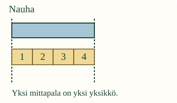
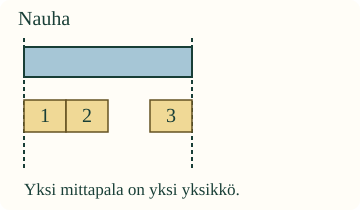
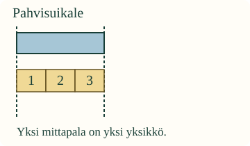

Kuinka monta mittapalaa?
Loikka haluaa kertoa nauhan pituuden Aavalle. Hänellä on monta yhtä pitkää mittapalaa. Miten niillä saa selville nauhan pituuden?
Tavoitteesi: mittaa pituus samanmittaisilla paloilla ja kerro, montako palaa tarvittiin.
Ensin oikeilla paloilla
Laita pöydälle suora paperisuikale. Valitse yhtä pitkiä palikoita. Aseta ensimmäisen palikan alku suikaleen alkuun. Jatka palikoita peräkkäin: edellinen loppuu siihen, mistä seuraava alkaa.
Valittu pala on mittayksikkö. Tässä yksi mittapala on yksi yksikkö. Palojen pitää pysyä samanpituisina koko mittauksen ajan.
Esimerkki: alkupäästä loppupäähän

Nauhan alle tarvitaan 4 mittapalaa. Palat peittävät koko pituuden ilman rakoja ja päällekkäisyyttä. Nauha on siis 4 mittapalaa pitkä.
Palojen numeroista tunnistat siirrettävän palan. Ne eivät ole viivottimen asteikko tai senttimetrejä.
Ansakohta: pelkkä palojen määrä ei riitä

Tässä on 3 mittapalaa, mutta niiden väliin jäi rako. Siksi emme voi sanoa, että nauhan pituus olisi 3 mittapalaa. Rakoon tarvitaan vielä yksi samanmittainen pala.
Myöskään päällekkäisiä paloja ei lasketa toimivaksi mittaukseksi. Tarkista ensin sijoittelu, sitten laske palat.
Ennusta
Voiko kaksi mittaajaa saada saman nauhan pituudeksi 4 palaa ja 5 palaa, jos palat ovat täsmälleen samanpituisia ja molemmat mittaavat oikein? Mistä aloittaisit tarkistamisen?
Avaa ajatus
Samoilla yksiköillä sama pituus antaa saman tuloksen. Katso alkupäätä, loppupäätä, rakoja ja päällekkäisyyksiä. Pelkkä palojen laskeminen ei paljasta kaikkia virheitä.
Mittaa ja korjaa mallissa
Voit lisätä mittapalan, valita sen painikkeesta ja siirtää sitä yhden palan verran. Pala lisätään aluksi edellisen jälkeen; sinä voit muuttaa sen paikkaa.
Esimerkkikuvat näyttävät mittaustavan. Jos ohjaimet eivät käynnisty, kokeile sitä oikeilla palikoilla.
Mittaa koko pituus ja kerro mittapalojen määrä.
Ruudun kuvan koko muuttuu eri näytöillä. Mittaa sitä mallin paloilla, älä omalla senttimetriviivottimellasi.
Sama tapa uudessa tilanteessa

Pahvisuikale on 3 mittapalaa pitkä. Esine vaihtui, mutta mittaustapa pysyy: samat yksiköt, yhteinen alku, koko pituus peittoon.
Apua kokeiluun
Katkoviivat näyttävät esineen alku- ja loppupään. Aloita vasemmalta. Alla voit kokeilla pahvisuikaleen mittaamista. Valitse tarvittaessa yksi pala sen numeropainikkeesta ja katso, mihin se siirtyy. Apuviivat näyttävät yhden palan pituisia välejä. Voit kokeilla ja korjata ilman aikarajaa.
Tutki pahvisuikaleen mittaamista
Malli on ilman JavaScriptiä alkuperäisessä kohdassaan: avaa mallin kohta.
Tutki lisää: eri kokoinen yksikkö
Sama nauha voidaan peittää kuudella pienellä tai kolmella kaksi kertaa niin pitkällä palalla. Nauha ei muutu. Mittauksen luku muuttuu, koska yksikkö muuttuu. Kerro toiselle myös, millaista palaa käytit. Älä sekoita pieniä ja isoja paloja yhdeksi palojen lukumääräksi.
Opettajalle: mittaamisen menettely ja rajat
Vuosiluokat 1–2. Kanoninen tavoite on suureen vertaaminen sovittuun yksikköön; tämä oppitunti rajaa esimerkit pituuteen. Pakollinen JA-ryhmä: M-MEAS-00 ja M-NUM-01. Ei uusia lukemisen, muotojen nimeämisen tai standardiyksiköiden esitietolukkoja.
Staattiset esimerkit ja oikeiden palojen kokeilu tulevat ennen tarkistusta. Mallissa oppilas rakentaa tai korjaa sijoittelun ja ilmoittaa luvun. Tarkistus hyväksyy saman peiton eri palajärjestyksillä: palojen numerot eivät määrää oikeaa ratkaisua. Käyttöliittymä auttaa lisäämään seuraavan palan; tätä ei tulkita itsenäisen sijoittamisen näytöksi. Valinnainen apuviiva ei muuta vastausta.
Offline: valmistele samanmittaisia palikoita ja suora suikale, jonka pituus on kokonainen määrä palikoita. Anna lapsen asettaa ja laskea itse tai osoittaa tarvittava korjaus. Seuraa erikseen yhtenäistä yksikköä, päiden kohdistusta ja koko pituuden peittämistä. Näytön oikea tulos ei todista fyysistä mittaamista tai pysyvää työtapaa.
Vain kokonaiset mittapalat tarkistetaan. Vajaa yksikkö, kaarevan pituuden mittaus ja senttimetriasteikko vaativat muuta opetusta. Yksikön koon vaikutus on valinnainen syvennys. Ei tallennusta, pisteitä, hallintamerkintää tai väitettä oppimisvaikutuksesta. Aikuinen voi lukea ohjeet; ääneen nimeämistä tai puheen vahvistamista ei vaadita.
Lopuksi
Miksi neljä palikkaa esineen vieressä ei vielä takaa, että esine on neljä palikkaa pitkä? Näytä yksi asia, jonka tarkistaisit.